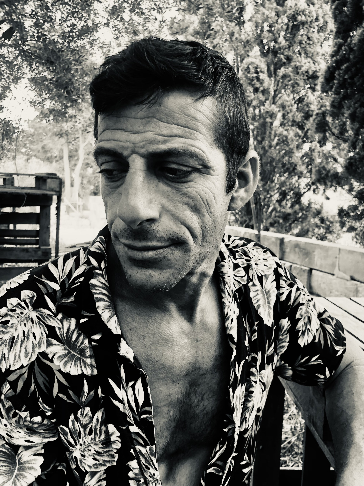
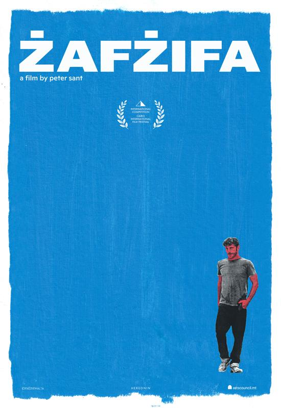

Film & Television Actor
Greek • Maltese • English
Character-driven screen actor with international film experience
Contact Download CV
Directed by Peter Sant
Premiered at Cairo International Film Festival 2025 — Official Selection (International Competition)
A Maltese feature film shot on 16mm, following the emotional journey of Dimitrios, a man navigating displacement, identity and human connection.